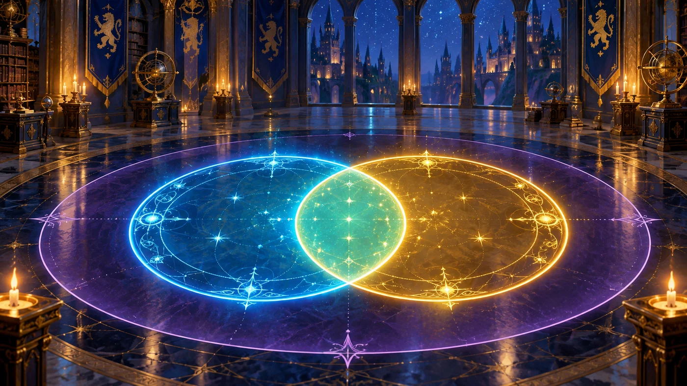
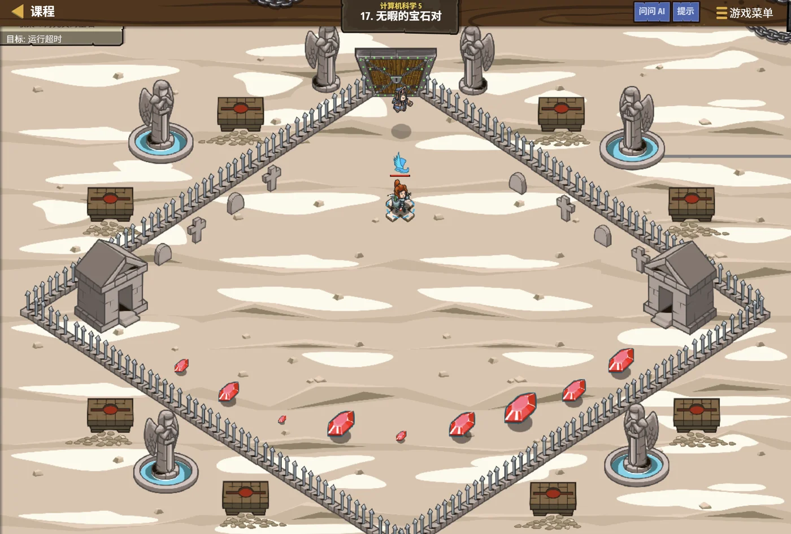

故事：王座的台阶上散着许多宝石，守门人要求你找出成对的两颗。
怎么找？你问。
一个一个地配。他说，第一颗跟后面每一颗都试一次，
再换第二颗……这样才不会漏掉任何一对。
扣哒考级 · GESP C++ 八级 · 第 1 单元 | 寂灭王座 THE THRONE
王座前的岔数 计数原理
The Principles of Counting

贺舒曼
镜中先知 · 你的向导
寂灭王座前是一条长廊，廊子每隔一段就分成两个岔口，
有的岔口再分、有的直接通向王座。
你数了数，短廊里有三个岔口，长廊里有五个。守门人问： 从这头到那头，一共有多少条不同的路？
你还没答，贺舒曼已经开口了：先想清楚：这些岔口是并列的，还是依次的。
你数了数，短廊里有三个岔口，长廊里有五个。守门人问： 从这头到那头，一共有多少条不同的路？
你还没答，贺舒曼已经开口了：先想清楚：这些岔口是并列的，还是依次的。
贺舒曼 · 镜中先知
欢迎来到最后一级。八级考的是一门"数数的学问"——计数原理。说白了就是：把事情数清楚，不多不少。
听起来简单，但它是概率、组合、算法复杂度的地基。
而这一单元只有两条规则，把这两条分清楚，你就赢了一半。
assets/illustrations/py-L8-01-01_throne_fork.webp
【配图位】幽暗长廊俯视图，廊道在每个岔口一分为二并延伸向深处的王座，金色暗纹沿路径流动；地砖上刻着数字与加号、乘号，象征两条计数原理。
0 单元导语与目标
Unit Overview
0.1 学习目标
0.2 考纲对照
1学完这个单元，你将能……
- 说清加法原理与乘法原理的区别
- 判断一个问题该"分类"还是"分步"
- 用两条原理解决路径、搭配、编号问题
- 初步使用容斥原理解"至少"类问题
- 把计数过程翻译成程序
- 检验答案是否"不重不漏"
2对标 GESP 考纲（C++ 八级）
- 掌握加法原理与乘法原理及其应用
- 理解分类与分步的区别，能正确选择计数方法
- 了解容斥原理的基本思想
- 考核目标：能解决简单的计数问题并编写验证程序
1 两种最基本的计数
Two Basic Principles
1.1 加法原理管"选哪一类"
图 2（SVG）：加法原理管"选哪一类"，乘法原理管"分几步做"
1.2 两条原理一句话区分
两条原理，一句话区分：
加法原理：完成一件事有几类办法，各类之间互不相干，选其一即可 → 各类相加。
乘法原理：完成一件事需要分几步，每一步都必须做 → 各步相乘。
关键词："或者"→ 加法；"并且 / 先…再…"→ 乘法。
加法原理：完成一件事有几类办法，各类之间互不相干，选其一即可 → 各类相加。
乘法原理：完成一件事需要分几步，每一步都必须做 → 各步相乘。
关键词："或者"→ 加法；"并且 / 先…再…"→ 乘法。
2 加法原理：分类相加
Addition Principle
2.1 分类相加的典型例题
典型例题
分析
从王座前出发去议事厅，可以坐车、可以骑马、也可以走暗道：
坐车有 4 条线路
骑马有 3 条线路
暗道有 2 条线路
问：一共有多少种走法？
答：三类办法互不相干，选一种就行 → 4 + 3 + 2 = 9 种要点 "或者"的关系，用加法；关键是各类之间不能有重复
2.2 用加法原理的前提
用加法原理的前提：
各类办法之间必须"互不重叠"。
如果坐车的线路和骑马的线路有重合（同一条路两种方式都能走），直接相加就会把重的那条数两遍。
这时候就要用容斥原理——先加起来，再减掉重复的部分。
如果坐车的线路和骑马的线路有重合（同一条路两种方式都能走），直接相加就会把重的那条数两遍。
这时候就要用容斥原理——先加起来，再减掉重复的部分。
assets/illustrations/py-L8-01-02_add_multiply_tree.webp
【配图位】王座前的岔道口：左边一条路分出三个并排的岔口（任选一条即可）——对应"分类相加"；右边一条路上依次设了三道门，必须一扇一扇依次通过——对应"分步相乘"；一名学徒站在路口，手里举着一棵分枝状的树形图。
3 乘法原理：分步相乘
Multiplication Principle
3.1 分步相乘的典型例题
典型例题
分析
要造一顶王冠：先选底座，再选宝石，最后选刻字。
底座有 3 种选法
宝石有 5 种选法
刻字有 4 种选法
问：一共能造出多少种不同的王冠？
答：三步必须都做，每步的选择互相独立
→ 3 × 5 × 4 = 60 种要点 "先…再…最后…"的关系，用乘法；每一层的选择数可以不同
3.2 画树形图最不容易错
画"树形图"最不容易错：
第一步有 3 个分叉，每个分叉下面再分 5 个，每个再分 4 个——
最后数一数树叶有多少片，就是答案。3 × 5 × 4 = 60 片。
拿不准用加法还是乘法时，画个两层的小树形图，一眼就清楚了。
最后数一数树叶有多少片，就是答案。3 × 5 × 4 = 60 片。
拿不准用加法还是乘法时，画个两层的小树形图，一眼就清楚了。
4 两者怎么区分
Tell Them Apart
4.1 两条原理一起用
| 问题里的说法 | 用哪条原理 | 怎么做 |
|---|---|---|
| "或者"、"要么…要么…" | 加法原理 | 分成几类，各类相加 |
| "并且"、"先…再…"、"既要…又要…" | 乘法原理 | 分成几步，步数相乘 |
| "只有一种方式能完成" | 两种都可能 | 看它是"一个选项"还是"一个步骤" |
| "至少…"、"最多…" | 容斥 / 分类讨论 | 先按大类分，注意别漏别重 |
两条原理一起用的例子
分析
从 A 到 C：可以先到 B 再到 C（分步，用乘法）
A → B 有 2 条路，B → C 有 3 条路 → 2 × 3 = 6 条
从 A 到 D：可以走 C 方向，也可以走 E 方向（分类，用加法）
走 C 方向有 6 条，走 E 方向有 5 条 → 6 + 5 = 11 条规律 复杂的计数题，往往是"先分类、类内分步"——两层配合着用
5 容斥原理初步
Inclusion-Exclusion
当两类里有"重复的部分"时，简单相加会把重复的算两遍。容斥原理就是：先加，再把重复的减掉。
5.1 容斥原理：加完再减掉重复
图 4（SVG）：容斥原理——加完再减掉重复
用程序验证计数
C++
// 1 到 100 中，能被 3 或 5 整除的数有多少个？
int byThree = 100 / 3; // 33
int byFive = 100 / 5; // 20
int byBoth = 100 / 15; // 6 （能同时被 3 和 5 整除 = 被 15 整除）
cout << byThree + byFive - byBoth << endl; // 47
// 用程序直接数一遍，验证答案
int cnt = 0;
for (int i = 1; i <= 100; i++) {
if (i % 3 == 0 || i % 5 == 0) cnt = cnt + 1;
}
cout << cnt << endl; // 47 —— 一致
OUTPUT 47 47
5.2 容斥的关键
容斥的关键：先想清楚"重复了哪一部分"。
两个集合：
三个集合会稍复杂一些：
考试里能用程序验证一遍，是最稳的习惯。
|A ∪ B| = |A| + |B| - |A ∩ B|三个集合会稍复杂一些：
加单个、减两两、加三个。考试里能用程序验证一遍，是最稳的习惯。

assets/illustrations/py-L8-01-03_inclusion_exclusion_scene.webp
【配图位】王座前厅地面画着两个交叠发光的光圈，两个圈里的符文数量分别标在圈边，交叠那一小块被单独照亮、画了个"减号"；一名学徒把两块石板并在一起，又把交叠处那块拿开。
6 代码实战
Level Practice
关卡
无暇的宝石对
进入关卡 →思路：外层固定一个，内层只跟它后面的比——这样每一对只被检查一次， 正好对应"组合数"不重不漏的计数思想。

assets/stages/py-L8-01-stage1_flawless_pair.webp
【关卡截图位】请把《无暇的宝石对》的游戏画面截图放到此处（放入 assets/stages/ 目录，文件名为 py-L8-01-stage1_flawless_pair.webp）。
重点示例：每一对只查一次
C++
for (int i = 0; i < array.size() - 1; i++) {
int elemI = array[i];
for (int j = i + 1; j < array.size(); j++) { // 只跟后面的比
int elemJ = array[j];
// 检查这一对是否满足条件
}
}
要点 内层从
i + 1 开始，就避免了"自己和自己配"以及"重复配对"
为什么内层要从 i+1 开始？
如果内层从 0 开始，那么 (1,3) 和 (3,1) 会被当成两对——重复计数了。
从
这个数字，就是"从 n 个里选 2 个"的组合数。
去扣哒世界闯这一关 →
从
i + 1 开始，每对只在 i 较小时被查一次，总数正好是 n(n-1)/2。这个数字，就是"从 n 个里选 2 个"的组合数。
7 常见陷阱
Common Pitfalls

扣哒鸭 · 调试官
计数的错，全在"该加还是该乘"和"重复没重复"上。四条，条条都能让答案差一倍。
1
把"分步"当成"分类"，该乘的用了加。

扣哒鸭：判断标准很简单：
这件事"只做一步就完成"→ 加法；"每一步都得做才完成"→ 乘法。
拿不准就画树形图，数叶子。
这件事"只做一步就完成"→ 加法；"每一步都得做才完成"→ 乘法。
拿不准就画树形图，数叶子。
正确做法：看是否"每步都必须做"
2
分类时漏掉一类，或两类有重叠。

扣哒鸭：用加法原理前，先问自己：
这些类加起来，是不是刚好覆盖了所有情况？有没有哪两种能同时成立？
重叠了就要用容斥减掉。
这些类加起来，是不是刚好覆盖了所有情况？有没有哪两种能同时成立？
重叠了就要用容斥减掉。
正确做法：检查"覆盖面"和"是否互斥"
3
配对时重复计数。内层也从 0 开始循环。

扣哒鸭：(A,B) 和 (B,A) 是同一对！
内层必须从
内层必须从
i + 1 开始，这样每对只数一次。正确写法：
for (int j = i + 1; j < array.size(); j++)4
容斥时忘了减重复部分。

扣哒鸭："能被 3 或 5 整除"——
直接写 33 + 20 会把 15、30、45… 这些数数两遍。
必须再减去"能被 15 整除"的 6 个。
直接写 33 + 20 会把 15、30、45… 这些数数两遍。
必须再减去"能被 15 整除"的 6 个。
正确做法：
33 + 20 - 6 = 478 题目练习
Practice
第 1 题改编自 2026 年 9 月 · C++ 八级 第 1 题，其余为原创练习题。
改编自 2026 年 9 月 · C++ 八级 · 第 1 题单选题
寂灭王座的门牌要用数字
这样的三位数共有（ ）个。
0、1、2、3、4、5 组成没有重复数字的三位数，且这个三位数能被 3 整除。这样的三位数共有（ ）个。
A.36 B.40 C.44 D.48
查看答案与详解
答案：B。先分类挑数字、再分步排位置 —— 这正是加法原理与乘法原理的配合。
① 挑数字：能被 3 整除要求各位数字之和是 3 的倍数。把 6 个数字按余数分三组：{0, 3}、{1, 4}、{2, 5}，只有"三组各取一个"才能凑成 3 的倍数，共 2 × 2 × 2 = 8 组数字。
② 排位置（首位不能是 0）：
· 含 0 的 4 组：每组 3! − 2! = 4 个 → 16 个；
· 不含 0 的 4 组：每组 3! = 6 个 → 24 个。
合计 16 + 24 = 40。
易错点：忘了"首位不能为 0"，直接 8 × 6 = 48 就会错选 D。
两步走：先用整除法则挑数字（组合），再按"首位特殊"排位置（排列）。
对应小节1 加法原理与乘法原理。
① 挑数字：能被 3 整除要求各位数字之和是 3 的倍数。把 6 个数字按余数分三组：{0, 3}、{1, 4}、{2, 5}，只有"三组各取一个"才能凑成 3 的倍数，共 2 × 2 × 2 = 8 组数字。
② 排位置（首位不能是 0）：
· 含 0 的 4 组：每组 3! − 2! = 4 个 → 16 个；
· 不含 0 的 4 组：每组 3! = 6 个 → 24 个。
合计 16 + 24 = 40。
易错点：忘了"首位不能为 0"，直接 8 × 6 = 48 就会错选 D。
两步走：先用整除法则挑数字（组合），再按"首位特殊"排位置（排列）。
对应小节1 加法原理与乘法原理。
原创练习题单选题
从甲地到乙地，可以坐火车（5 个车次）、坐汽车（3 个班次）或坐飞机（2 个航班）。
共有多少种走法？（ ）
A.10 B.30 C.3 D.7
查看答案与详解
答案：A。三类办法互不相干，选一种就能到达——
这是加法原理：5 + 3 + 2 = 10 种。
易错点：B 项 30 是把它们乘起来了，那是"三种都要坐一遍"的情况。
对应小节2 加法原理。
易错点：B 项 30 是把它们乘起来了，那是"三种都要坐一遍"的情况。
对应小节2 加法原理。
原创练习题单选题
做一套服装需要先选上衣（4 种）、再选裤子（3 种）、最后选鞋子（2 种）。
共有多少种不同的搭配？（ ）
A.9 B.24 C.12 D.6
查看答案与详解
答案：B。三步都必须做，这是乘法原理：
4 × 3 × 2 = 24 种。
对比上一题："或者"用加法，"先…再…"用乘法。
对应小节3 乘法原理。
对比上一题："或者"用加法，"先…再…"用乘法。
对应小节3 乘法原理。
原创练习题判断题
使用加法原理时，要求各类办法之间互不重叠。（ ）
查看答案与详解
答案：正确（√）。如果两类有重叠，重叠部分会被数两遍。
补救办法：用容斥原理减去重复的部分，或者重新划分成互斥的类别。
对应小节2 加法原理；5 容斥原理初步。
补救办法：用容斥原理减去重复的部分，或者重新划分成互斥的类别。
对应小节2 加法原理；5 容斥原理初步。
原创练习题单选题
1 到 100 中，能被 4 或 6 整除的数有多少个？（ ）
A.41 B.33 C.25 D.8
查看答案与详解
答案：B。用容斥原理：
能被 4 整除：100 ÷ 4 = 25 个；
能被 6 整除：100 ÷ 6 = 16 个；
能同时被 4 和 6 整除 = 能被 12 整除：100 ÷ 12 = 8 个。
结果：25 + 16 - 8 = 33 个。
关键："同时被 4 和 6 整除"等价于"能被 lcm(4,6) = 12 整除"。
对应小节5 容斥原理初步。
能被 4 整除：100 ÷ 4 = 25 个；
能被 6 整除：100 ÷ 6 = 16 个；
能同时被 4 和 6 整除 = 能被 12 整除：100 ÷ 12 = 8 个。
结果：25 + 16 - 8 = 33 个。
关键："同时被 4 和 6 整除"等价于"能被 lcm(4,6) = 12 整除"。
对应小节5 容斥原理初步。
原创练习题单选题
从 5 个同学中选出 2 个组成一队，共有多少种选法？（ ）
A.10 B.20 C.25 D.5
查看答案与详解
答案：A。用
为什么要除以 2？因为 (甲,乙) 和 (乙,甲) 是同一队。
也可以理解为：第一个位置有 5 种选法，第二个位置剩下 4 种， 但因为顺序无所谓，要除以 2。
对应小节6 代码实战。
n(n-1)/2 计算：
5 × 4 ÷ 2 = 10 种。为什么要除以 2？因为 (甲,乙) 和 (乙,甲) 是同一队。
也可以理解为：第一个位置有 5 种选法，第二个位置剩下 4 种， 但因为顺序无所谓，要除以 2。
对应小节6 代码实战。
原创练习题判断题
"从 3 件上衣和 4 条裤子中挑一套穿"应该用乘法原理，答案是 12。（ ）
查看答案与详解
答案：正确（√）。一套衣服 = 一件上衣 + 一条裤子，
两样都必须选，是"分步"关系。
所以用乘法：3 × 4 = 12 种搭配。
对应小节3 乘法原理。
所以用乘法：3 × 4 = 12 种搭配。
对应小节3 乘法原理。
原创练习题编程题
题目要求：用程序验证"1 到 100 中能被 3 或 5 整除的数有 47 个"，
并统计其中"只被 3 整除"（不被 5 整除）的数有多少个。
查看参考答案与要点
// ① 理论计算
int byThree = 100 / 3; // 33
int byFive = 100 / 5; // 20
int byBoth = 100 / 15; // 6
cout << "能被 3 或 5 整除：" << byThree + byFive - byBoth << endl; // 47
// ② 程序暴力验证
int cntOr = 0;
int cntOnlyThree = 0;
for (int i = 1; i <= 100; i++) {
if (i % 3 == 0 || i % 5 == 0)
cntOr = cntOr + 1;
if (i % 3 == 0 && i % 5 != 0)
cntOnlyThree = cntOnlyThree + 1;
}
cout << "程序数出来：" << cntOr << endl; // 47
cout << "只被 3 整除：" << cntOnlyThree << endl; // 27
输出：47、47、27
要点：
① 理论值 33 + 20 - 6 = 47 与程序结果一致；
② "只被 3 整除"的条件是 i % 3 == 0 and i % 5 != 0——注意是 and 加不等于；
③ 也可以用 33 - 6 = 27 直接算出来；
④ 考试时用程序验证理论答案，是很实用的检查手段。
对应小节5 容斥原理初步。
9 本单元小结
Unit Summary
贺舒曼 · 镜中先知
三句话记住计数原理：一、"或者"用加法，各类互不重叠。
二、"先…再…"用乘法，每步都必须做。
三、有重叠就用容斥：先加，再减掉重复的。
拿不准的时候，画一棵树形图，数叶子——永远不会错。
你在王座长廊里收获了什么
- 加法原理——完成一件事有几类互斥办法，各类相加。
- 乘法原理——完成一件事需要分几步，各步相乘。
- 怎么判断——"或者"→ 加法；"先…再… / 并且"→ 乘法。
- 画树形图——拿不准时画两三层，数叶子最直观。
- 容斥原理——
|A ∪ B| = |A| + |B| - |A ∩ B|。 - 整除计数——"同时被 a 和 b 整除"就是"能被 lcm(a,b) 整除"。
- 组合计数——从 n 个里选 2 个有
n(n-1)/2种；内层循环从i+1开始就能不重不漏。